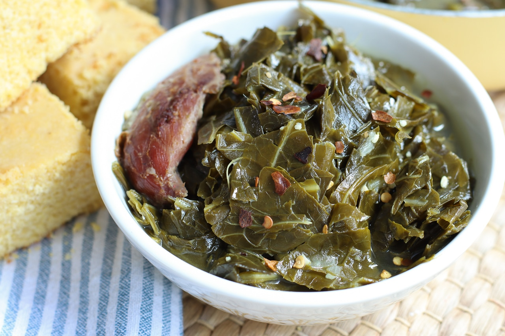

Collard Greens

Collard greens are a healthy and delicious southern vegetable! It's great for a side dish for almost any meal! This recipe is the top rated collard greens recipe on allrecipes.com, so you're in for a treat!
Southerners know a thing or two about cooking collard greens. Don't believe us? Just try this southern collard greens recipe. Infused with meaty flavor from ham hocks, these tender greens will steal the show on any dinner table.
Ingredients
- 2 medium sweet onions, finely chopped
- 2 smoked ham hocks
- 4 cloves garlic, finely chopped
- 3 (32 ounce) containers chicken broth
- 3 (1 pound) packages collard greens, trimmed
- ⅓ cup apple cider vinegar
- 2 tablespoons white sugar
- 1 ½ teaspoons salt, or to taste
- ¾ teaspoon ground black pepper, or to taste
Steps
- Gather all ingredients.
- Combine onions, ham hocks, and garlic in a stockpot; add chicken broth. Cook mixture over medium heat until meat is falling off the bone, 1 to 2 hours.
- Stir collard greens, vinegar, sugar, salt, and pepper into the broth mixture; cook until greens have reached desired tenderness, about 2 more hours.
- Enjoy!